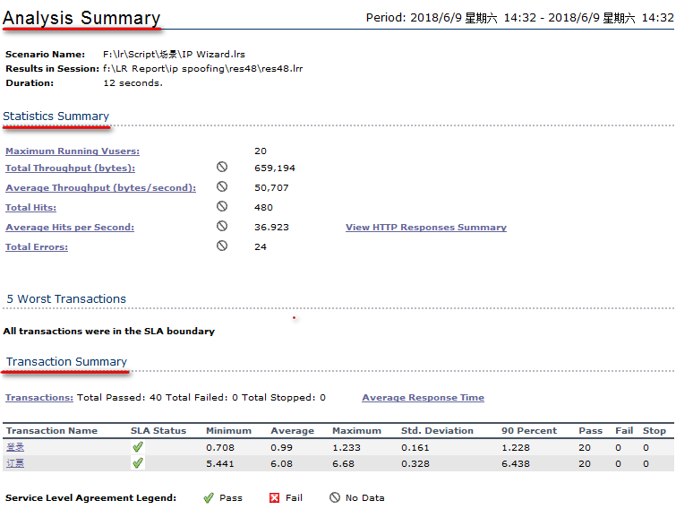
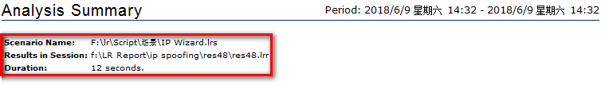
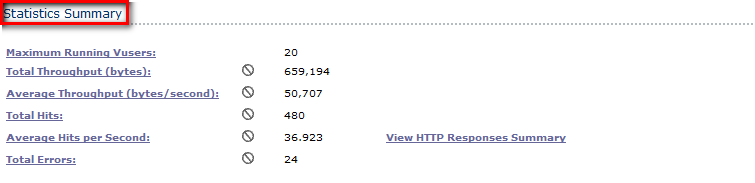
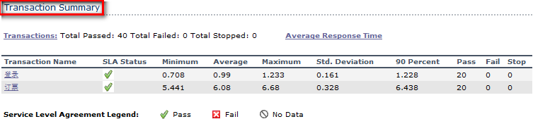
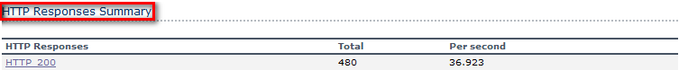
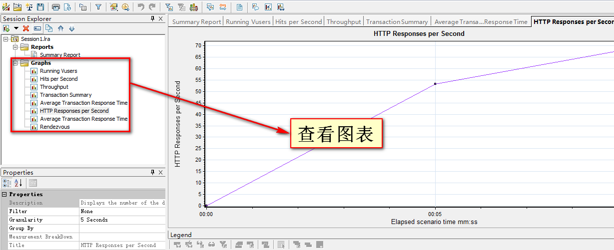
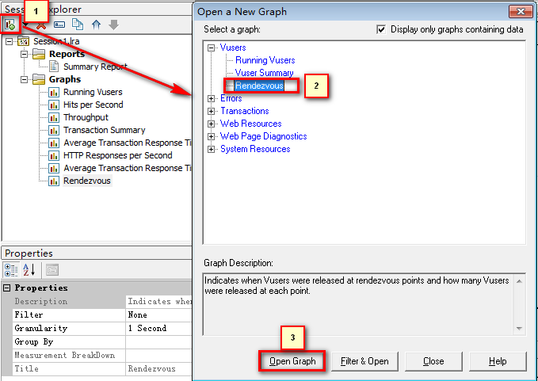
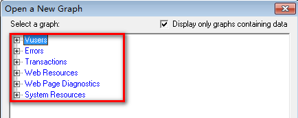

Analysis Summary(结果摘要)
目标
- 理解 Analysis Summary 报告的基本组成
- 了解添加其他图表的方法
一、Analysis Summary 示意图

上图为 LR 进行场景测试结果收集后，首先显示的该结果的一个摘要信息，以简要信息列出本次测试的结果;
概要中包含以下几种摘要：
1). 场景及执行情况
2). Statistics Summary(统计摘要)
3). Transaction Summary(事务摘要)
4). HTTP Responses Summary(HTTP响应摘要)
1.1 场景及执行情况

- Scenario Name：本次执行的结果来源那个场景；
- Result in Session：结果保存目录；
- Duration：本次场景运行持续时间。
1.2 Statistics Summary(统计摘要)

- Maximum Running Vusers:最大运行用户数
- Total Throughput(bytes):总吞吐量(字节)
- Average Throughput(bytes/second):平均每秒吞吐量(字节)
- Total Hits:总点击数
- Average Hits per Second:平均每秒点击数
- Total Errors:总错误数
1. 1MB = 1024KB 1KB = 1024Bytes 1MB = 1024KB * 1024Byte = 1048576 Byte；
2. 吞吐量越大，说明服务器处成理性能越好；
3. 请求数和吞吐量正比。
1.3 Transaction Summary(事务摘要)

1). SLA Status:服务水平协议状态 2). Minimum:最小事务的时间 3). Average:平均事务时间 4). Maximum:最大事务时间 5). Std.Deviation:标准偏差 6). 90 Percent:90%事务小于等于这个时间 7). Pass:通过事务数 8). Fail:失败事务数 9). Stop:停止事务数
提示：
1). 以上时间单位为秒；
2). 标准偏差：越小越好，代表事务数据之间的差异大小程度，可以使用 Excel 中 STDEVP 函数计算出来
1.4 HTTP Responses Summary(HTTP响应摘要)

- HTTP Responses:HTTP响应状态码
- Total:总数量
Per second:每秒响应数
提示：HTTP响应代码200为服务器响应查询成功状态码，其他有关状态码请查询有关资料；
二、查看与添加图表
2.1 查看图表

在左侧图表列表处，点击要查看的图表，右侧区域显示图表结果
2.2 添加图表 添加默认未在右侧列表中显示的图表

1：点击弹出添加图表对话框
2：选中要添加的图表
3：点击添加选中的图表
提示：快捷键： Ctrl + A 可弹出添加图表对话框
2.3 可添加系列图表

- Vusers：有关虚拟用户图表
- Errors：有关错误图表，如：每秒错误率
- Transactions：有关事务图表，如：平均事务响应时间
- Web Resources：有关Web页面图表，如：每秒点击率
- Web Page Diagnostics：有关Web页面组件图表，如：页面诊断
- System Resources：有关服务器资源图表，如：CPU、内存、磁盘、网路
提示：
1. 以上系列图表，使用时候有时候需要进行合并，来更好的为系统调优做服务；
(比如：Hits per Second与Average Throughput (bytes/second)合并，测试两款服务器性能)
2. 以上明细图表，关注【重要图表分析】章节